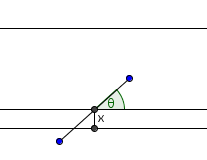
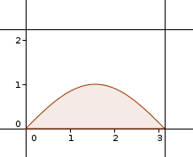

| Choisissez votre langue ! | Choose your language ! |
Problème de Buffon
On dispose d'un parquet avec des lattes de largeur 2a.
On laisse tomber sur ce parquet une aiguille de longueur l < 2a.
Calculer en fonction de a et de l la probabilité pour que l'aiguille chevauche deux lattes.
Voir l'animation du cours.
Vérifier les calculs au moyen d'une simulation en langage Python et/ou Julia.
aide
Soit x la distance du centre de l'épingle au bord de latte le plus proche.
Alors x est distribué uniformément entre 0 et a.
Soit θ l'angle de l'épingle avec la direction des lattes.
θ est distribué uniformément sur l'intervalle [0,π[.
Trouver une relation entre x, θ et l pour que l'épingle coupe ce bord.
solution
Soient x et θ comme il est dit dans l'aide :

La condition pour que l'épingle coupe le bord le plus proche du centre est x ≤ l.sin(θ).

Le couple (x,θ) est uniformément distribué sur un rectangle de surface πa.
Les cas favorables correspondent à l'hypographe de la fonction x(θ)=l.sin(θ).
Le probabilité cherchée est donc :
\( \displaystyle P = \frac{1}{\pi a}{\int_{0}^{\pi}{l\sin(\theta){d\theta} = \frac{2l}{\pi a}}} \)
Programme Python :
Soit avec Julia :
Buffon's problem
We have a parquet floor with strips of width 2a.
A needle of length l < 2a.
Calculate according to a and l the probability that the needle overlaps two strips.
See the animation of the course.
Check the calculations by means of a simulation in Python and/or Julia language.
hint
Let x be the distance from the center of the needle to the nearest strip edge.
Then x is uniformly distributed between 0 and a.
Let θ the angle of the needle with the direction of the strips.
θ is uniformly distributed over the interval [0,π[.
Find a relation between x, θ and l for the needle to intersect that edge.
solution
Let x and θ as said in the help :
the condition for the needle to intersect the closest edge is x ≤ l.sin(θ).
The pair (x,θ) is uniformly distributed over a rectangle with area πa.
Favorable cases correspond to the hypograph of the function x(θ)=l.sin(θ).
The sought probability is then :
\( \displaystyle P = \frac{1}{\pi a}{\int_{0}^{\pi}{l\sin(\theta){d\theta} = \frac{2l}{\pi a}}} \)
Simulation with Python :
Or with Julia :
|
Création Gilles Dubois - licence CC-BY-SA
Created by Gilles Dubois - licence CC-BY-SA
|
Septembre 2023
September 2023
|
Version mobile Jquery
Mobile Jquery version
|
|